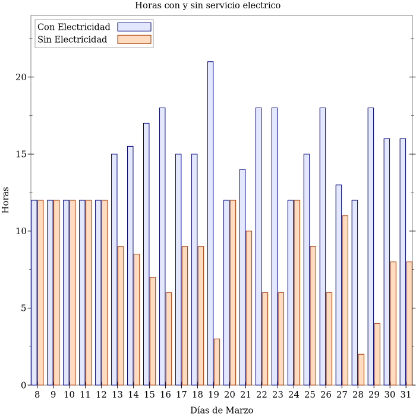

Para la autenticación basada en llaves, se genera el par de llaves en la computadora local.
ssh-keygen
Para poner la llave pública en el servidor:
Nos loguemaos
Creamos el directorio .shh y el archivo .ssh/authorized_keys: mkdir .ssh touch .ssh/authorized_keys
Abrir el archivo: nano .ssh/authorized_keys
Pegamos el contenido de file.pub en authorized_keys
Cambiamos permisos: chmod 700 .ssh chmod 644 .ssh/authorized_keys
ssh user@ip -p 22 -i ~/.ssh/file
Para forzar la autenticación basada en llaves: nano /etc/ssh/sshd_config PassworAuthentication yes to no service ssh restart
This is the first post to this example blog. To add new posts, just add files to the posts/ subdirectory, or use the web form. editate
editatte otra vez
volvemos
{kind=link}
This is the second post to this example blog. To add new posts, just add files to the posts/ subdirectory, or use the web form.
A partir del 8 de marzo el plan de racionamiento eléctrico en Barinas fue mas agresivo y las horas sin este servicio pasaron de entre 3 y 4 horas diarias a entre 6 y 12 horas. En la siguiente tabla se puede observar las horas con electricidad y sin electricidad. Y como una imagen vale mas que mil palabras esta un gráfico para representar los datos recolectados.
Datos
Fecha CE SE
08-05 12 12
09-05 12 12
10-05 12 12
11-05 12 12
12-05 12 12
13-05 15 9
14-05 15.5 8.5
15-05 17 7
16-05 18 6
17-05 15 9
18-05 15 9
19-05 21 3
20-05 12 12
21-05 14 10
22-05 18 6
23-05 18 6
24-05 12 12
25-05 15 9
26-05 18 6
27-05 13 11
28-05 22 2
29-05 18 4
30-05 16 8
31-05 16 8
Gráfico de barras
